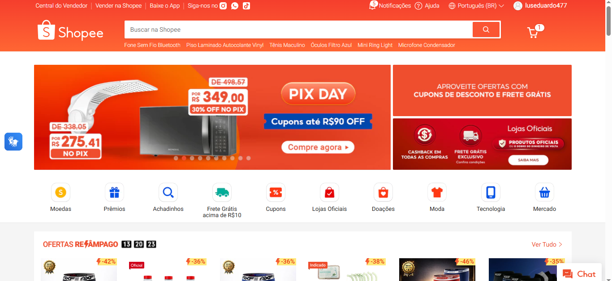

Compras online
Benchmark


Benchmark
Quem é o público-alvo das três concorrentes?
resposta - São sites geralmente destinados ao publico geral.
Como as concorrentes se comportam em diferentes dispositivos (desktop/celular)?
resposta - As concorrentes funcianam bem tanto em desktop quanto em dispositivos móveis, mantendo praticamente as mesmas funcionalidades. Além disso, possuem aplicativos próprios, o que melhora ainda mais a experiência no celular.
Quais são as funcionalidades demonstradas em cada uma das concorrentes?
resposta - Todos os sites possuem mesmas funcionalidades principais: compra e venda de produtos diversos. Entretanto, a Shein tem mais foco no comércio de roupas, enquanto as outras oferecem uma variedade maior de produtos, como eletrônicos, acessórios e itens diversos.
Como é o design das concorrentes? (elementos da interface, localização dos menus, cores, etc);
resposta - Em todas as plataformas, os menus e categorias ficam localizados no topo da página, facilitando a navegação. Os sites possuem identidade visual própria, com cores chamativas e bem distribuídas, além de organização que torna a experiência do usuário mais intuitiva.
Os concorrentes possuem instruções de uso, canal de atendimento e/ou FAQ?
resposta - Sim, todos os concorrentes possuem ferramentas de ajuda, FAQ e canais de atendimento para os usuários. Tais ferramentas ficam posicionadas na pagina inicial de forma bem visível, apesar de exigirem mais esforço mental e atenção para serem utilizadas.
Os concorrentes possuem alguma indicação de acessibilidade?
resposta - Sim, alguns dos recursos contidos em todos os sites são, ajuste de idioma, navegação simplificada por categorias e são compativeis em diversas plataformas. No entanto, essas opções não são disponibilizadas de forma muito visível para os usuários.
prints

Neste relatorio decidimos fazer a analise de plataformas de compra online,